Ders 22
En son derste evrensel fonksiyonlar $g_i(x)$'den bahsettik, bu fonksiyonların hatırlarsak süperstabil $2^i$-çevrimleri vardı. Ardından $g_i(x)$'lerin en babası $g_\infty(x)$ denebilecek bir fonksiyonun nasıl bulunacağından bahsettik, ki bu kaos olmaya başladığında ortaya çıkacak evrensel fonksiyondu. İsimsel olarak ona kimsenin $g_\infty$ kullanmadığını, basit bir şekilde $g$ dediğini de söyledik ve bu fonksiyon yan şartları da olan "fonksiyonel denklem" dediğimiz bir şeyi tatmin ediyordu. Ayrıca sabit $\alpha$'yi nasıl bulacağımızı gördük, bu sabit haritanın maksimumu yakınında $x$ yönündeki ölçeklemeyi kontrol ediyordu.
Ama hala bir gizemi çözümsüz bıraktık - parametre eksenindeki ölçeklenmeyi kontrol eden sihirli sayı $\delta$ nerede? Bugün işlemek istediğim konu bu. Bu ders herhalde tüm diğer dersler içinde en zoru; tekrar normalizasyon en zor konu demiştim, bu alt-konu tekrar normalizasyondaki en zor konu, yani zor'un zoru! Sebep $\delta$'yi bulmak için oldukca soyut kavramlara giriş yapma zorunluluğumuz. Alışılagelmiş reel sayıların olduğu bir uzayda iş yapmak yerine fonksiyonlardan oluşmuş bir uzayda iş yapmamız gerekecek. Bu uzay sonsuz boyutlu bir uzay, pek çok insan diyor ki (!) üçten fazla boyutu hayal edemiyorlar, sonsuz boyutu hayal etmek daha da zor olurdu herhalde, her ne kadar pek çoğumuz uzun süre bunu yapmaya uğraşmış olsak ta (!). Gerçi biraz yaratıcılıkla bu problemin üstesinden gelebiliriz belki, çizimi bir şekilde üç boyuta indirgeyerek.. bir de tabii tüm bunları iki boyutta tahtada yapmam lazım, zorluğumuz çok! Ama zorluklar bir yana, zannediyorum gelecek anlatım hoşunuza gidecek. $\delta$'nin nerede olduğu gizemini giderecek. Soyutluğun en zirvelerinde gezindikten sonra konuyu daha yeryüzüne indirip bir örnek üzerinden, lise seviyesinde cebir kullanarak somutlaştıracağım, böylece göreğiz ki birazdan $\delta$ hesabı için kullanacağım argüman gerçekten somut bir hesaba dönüşebiliyor. Gerçi argüman yaklaşık olacak ve yüzde 10 civarı hata içeriyor olacak, ama neler olduğunu anlamamızda bize yardımcı olacak.
Fonksiyon uzaylarına gelelim. Soyut fonksiyon uzayına bakacağız; ki aslında Fonksiyonel Analiz hakkında bir ders alsanız bakacağınız konulardan biri bu olurdu, ama şimdiki anlatım için bu bilgiyi önşart koşmuyorum, bazı kısayollar üzerinden bu teknikleri kabaca kullanmış olacağız. Neyse, bu fonksiyon uzayında her nokta bir fonksiyonu temsil eder. Yani bir nokta sadece bir sayıyı, bir geometrik yeri temsil etmiyor, ayrıca bir fonksiyon. Mesela şu nokta [havada hayali bir yeri gösteriyor] bir sinüs fonksiyonu, şu bir kosinüs fonksiyonu, diğeri parabol gibi. Parabol deyince mesela spesifik bir $r$ kullanan bir lojistik harita, bu uzayda o bir nokta olurdu.
Şimdi bu uzayda bir operatör $T$ tanımlayalım, bu operatör tekrar normalizasyon işini yapmakla görevli olacak. Yani fonksiyonları fonksiyonlara eşleyecek, yani noktaları noktalara, ve zaten dedik ki noktaları fonksiyonları temsil ediyor. Uygulamak için $T$'yi alırız belli bir noktadaki $f(x)$'ye uygularız,
$$ T f(x) = \alpha f^2 \left( \frac{x}{\alpha} \right) \qquad (1) $$
Umarım üstteki ifadeyi hatırlamışsınızdır, önceki derste tekrar normalizasyon için sürekli yaptığımız işlem, $x/\alpha$ ile $x$ yönünde tekrar ölçekleme var, ki bu fonksiyon dışındaki $\alpha$'yi ortaya çıkarıyor, ve bir de fonksiyonun ikinci dönümünü kullanıyoruz.. Önceki derste gösterdik ki $g_\infty$ ya da $g$ dediğimiz fonksiyon özeldi, çünkü üstteki denklemde $f$ yerine $g$ kulanılınca tekrar kendisine eşleniyordu. Yani fonksiyonel denklem şuna tekabül ediyor, $g$ $T$'nin bir sabit noktası, yani $g$ kendisine tekrar normalize oluyor,
$$ g(x) = \alpha g^2 \left( \frac{x}{\alpha} \right) \qquad (2) $$
Burada olan çılgın olayı farkettiniz umarım. Daha önce sabit noktalardan bahsederken reel sayıların diğer reel sayılara basit eşlenmesinden bahsediyorduk, bir şeyin "sabit nokta" olması bir noktanın kendisine eşlenmesi demek oluyordu. Şimdi noktalar reel sayılar değiller. Şimdi noktalar fonksiyon. Yani şimdi "$g$, $T$'nin sabit noktası" deyince bir anlamda daha önce özyineli haritada işlediklerimden bahsediyorum, tek fark reel sayıların reel sayılara değil fonksiyonlar fonksiyonlara eşleniyor. O zaman $g$'nin fonksiyon uzayında bir sabit nokta olabilmesi (1)'de söylenene tekabül ediyor.
Her halükarda $g$'nin tatmin ettiği formül (2), bu durumda (1)'deki operatörü tanımlamak doğal.
Şimdi belki ne yapacağımı tahmin edebilirsiniz; ne zaman sabit noktalarımız varsa onların etrafında lineerize etmek hoşumuza gidiyor, olanları anlamaya uğraşıyoruz böylece. Bir noktada fonksiyon uzayında lineerize etmeyi düşünmemiz gerekiyor. Diğer yandan $T$'nin fonksiyonlara ne yaptığını anlamak istiyorum, $g$ için değil, o bir sabit nokta, ama diğer fonksiyonlara. Ayrıca eğer (2) bir sabit nokta ise hangi tür bir sabit nokta acaba? Stabil mi, eyer (saddle) noktası mı, iten türden bir sabit nokta mı?
Bu noktada bazılarınız $g$'nin ne tür bir sabit nokta olduğunu tahmin ediyor olabilr, ama bazılarımız için sürpriz edici de olabilir. Siz ne düşünüyorsunuz? Eğer tekrar normalizasyon operatörü (1) ise (2) tekrar normalizasyon bağlamında ne tür bir sabit noktadır? [Bir öğrenci gayrı-stabil diyor]. Niye böyle dediniz? [Tahmin ettim hocam diyor]. Sadece bir tahmin..! Tamam öyleyse. [Strogatz gülüyor, bir başkası kare almaktan bahsediyor]. Ah, sız duruma kare alma açısından baktınız, o zaman her döngüde sayı büyür de büyür, o zaman gayrı-stabillik olmalıdır gibi bir mantık zinciri kurdunuz.. Herneyse, ortaya çıkıyor ki $g$ aslında bir eyer noktası. Niye olduğunu birazdan göreceğiz. Ayrıca niye olduğunu anlayınca kaç tane giren kaç tane çıkan yön var onu da göreceğiz. Bu arada bugün işlediğim anlatım kitabımda yok, aklımızda olsun.
Niye eyer? Soralım $T$'yi o evrensel, süperstabil $2^i$-çevrimlerden birine uygularsak ne olur? Yani $T g_i$'i merak ediyoruz. Cevabın
$$Tg_i = Tg_{i-1} \qquad (3)$$
olduğu ortaya çıkıyor. Bu mantıklı mı? Bu $g_i$'ların ne olduğunu hatırlayalım. Onlar evrensel, süperstabil $2^i$-çevrimleri. Peki $T g_i$ neye benzeyecek o zaman. Nasıl bir nesne olacak? Eğer üstte görülen $Tg_i$ formülünü uygularsam $g_i$'nin tekrar normalize edilmiş versiyonuna bakıyorum, bu versiyon ikinci döngüdeki durum artı ölçeklenme. Ayrıca biliyoruz ki eğer bir şeyin süperstabil 2-çevrimi var ise, ikinci döngüde süperstabil sabit nokta var demektir. Benzer şekilde $2^i$-çevrimi var ise ikinci döngüde süperstabil $2^{i-1}$-çevrim olmalıdır.
Bu tam ispat değil tabii, gevşek bir argüman bu. Şimdi size (3)'un ima ettiği fonksiyon uzayında olacakları gösteren bir resim çizmeye uğraşacağım.
Soru
Niye evrensel fonksiyon dediğimiz $i-1$ indisinde, $i+1$ indisinde değil?
Cevap
Daha önce anlattıklarım bu cevabı sağlıyor aslında ama tam vurguyu yapamadım zannediyorum. Diyelim ki $g_1$ durumuna bakıyorum, ve bu durumda süperstabil bir 2-çevrim var. $T g_1$ işlemi bana ne verir?
$$ T g_1 = \alpha g_1^2 \left( \frac{x}{\alpha} \right) $$
2-çevrime sahip olan bir şeyin ikinci döngüsünde 2-periyot noktaları sabit noktalar haline gelirler. Değil mi? Aşağı yukarı ikinci döngüdeyiz. Son 3 derste bu vurguyu yapmaya uğraşıyorum. Bir fonksiyonunun 2-çevrimini incelemek için o fonksiyonun ikinci döngüdeki haline bakılır ve 2-çevrimdeki noktaların sabit noktalar olduğu görülecektir. Yani demek istediğim üstteki eşitliğin sağ tarafı ikinci döngü (ölçeklenme işlemi önemli değil), o süperstabil 2-çevrim şimdi süperstabil sabit nokta haline gelecek, o zaman $T g_1$ süperstabil bir sabit noktaya sahip olan evrensel bir fonksiyondur, yani $g_0$. Onun anlamı bu. Burada indisin bir aşağı indiğini gördük.
Fonksiyon uzayında olanları sematik olarak göstermeye uğrasayım; şimdi birkaç tane sayfa / tabaka / katman çizeceğim, her tabaka farklı stabilite tipindeki bir fonksiyonu temsil edecek. Katmanları dalgalı, uçan hali gibi çizeceğim, ve artan $r$ aşağı yöndeki katmanlara bizi götürecek. Eğer lojistik haritaya bakıyor olsaydım bu $r$ bildiğimiz $r$ olurdu. Hatırlarsak $r$ bir dış parametre, bizim kontrolümüzdeki bir ayar, istersek onu değiştirip stabil sabit noktası olan bir duruma, ya da stabil 2-periyotu olan başka bir duruma gelebiliriz, $r$'yi değiştirdikçe kaosa yaklaşıyoruz, incir ağacının içinden geçiyoruz, vs.
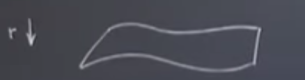
Evet, işte bu $r$'yi değiştirdikçe bir sürü katman elde edebiliyoruz, sonsuz tane aslında [$r$ reel sayı, sonsuz ufaklıkta değişim mümkün], ama diyelim ki ben $R_i$'daki katmana odaklanmak istiyorum, burada süperstabil $2^i$-çevrimimiz var, harita için çekici bu. Şimdi lojistik haritayı düşünelim, $R_i$ parametresinin tanımladığı lojistik harita bu tabakadaki bir nokta olurdu. Değil mi? Çünkü demiştik ki bu tabaka bir fonksiyon uzayı, orada lojistik harita var, sinüs haritası var, olabilecek tüm fonksiyonlar var, superstabil $2^i$-cevrimi olan her harita burada.
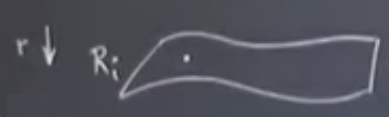
Benzer şekilde bir tabaka daha var, bu tabaka $2^{i-1}$-çevrimleri içeriyor, onu lojistik harita bakış açısından $R_{i-1}$ olarak temsil edebilirdik. Altta da tabakalar olacaktır tabii, gide gide $R_\infty$'a gelebiliriz, bu noktada kaosun başlangıcı gözükecek, bu tabakada da daha önce diğer tabakalarda işaretlediğimiz arkadaşımız lojistik haritayı nokta olarak gösterebiliriz tabii,
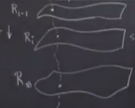
Üstteki resimde farklı katmanlardaki lojistik haritaları ayrıca birleştirdim. Tek lojistik haritan başlayıp onun parametresini değiştirince parabol daralıp, genişler bildiğimiz gibi, bu değişim işte katmanlar arasındaki o noktalı çizgideki gidiş bir bakıma.
Soru
Bu katmanlar sadece tek doruklu haritalar için mi?
Cevap
Ele aldığım haritaların hepsi kaosa giderken lojistik haritaya benzer periyot katlanması gösteren haritalar. Bu uzayın ne olduğu hakkında biraz belirsiz kaldım doğru, tam tanım ne olurdu.. ? Analitik fonksiyonlar uzayı mı? Nasıl bir pürüzsüzlüğe ihtiyacım olacak emin değilim aslında. Karesel maksimum istediğimi biliyorum. Tek maksimum istiyorum, yani tek dorukluluk. Analitik fonksiyon şartı koşmak ta zarar vermezdi herhalde, böylece fonksiyonların yakınsayan güç serileri mevcut olurdu. Uzayın ne olduğundan tam emin değilim, ama kesinlikle iyi huylu, pürüzsüz, tek maksimumlu, karesel olan lojistik, sinüs, vs. haritalarını içeriyor. Bu tanımla devam edelim.
$r$ nedir? Mesela $f_r(x) = rx(1-x)$ formülü var, soyut olarak düşünürsek $r$'yi değiştirdikçe fonksiyon uzayında hareket ediyoruz, üstteki resimdeki tabakalar arası kavisli çizgi üzerinde hareket ediyoruz. Ama bu tek bir çizgi, aynı {\em familya} içinde hareket ediyor, parabol, lojistik familyası içinde. Sinüs haritası da olabilirdi, onu $f(x) = r\sin(x)$ olarak yazabilirdik mesela, ve bu bize sinüs haritaları familyasını verirdi. Daha önce gördük ki bu familya benzer bir periyot katlanmasına sahip. Bu kavisli çizgiyi ötekinin yanina çizebiliriz,
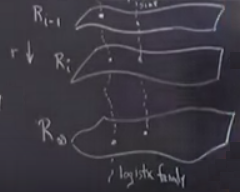
Bu arada üstteki resimde katmanlar çizdim ama sadece süperstabil olanlarını gösterdim. Diğerleri de var, onlar çizilmedi. Eğer incir ağacı diyagramında olsa çizdiğim katmanlar şuradaki gibi,
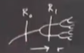
Herhangi bir katmandaki tüm haritalar aynı çekici tipine sahip.
Devam edelim, $T$ ne yapıyor. Bu operatör fonksiyonları, ya da noktaları, alıyor, ve onları başka bir yere taşıyor. Değil mi? Çünkü bir fonksiyonun $T$'sı yeni bir fonksiyondur. Peki bu yeni fonksiyon iki üstteki resimde nerede olmalı? Bu arada çok önemli bir fonksiyonu iki üstteki ana resimde göstermedim, bu fonksiyon evrensel fonksiyon $g$. Onu da çizelim,
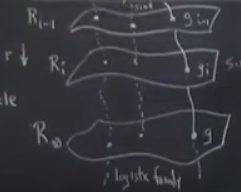
$g$ kaosun ortaya çıkacağı noktada mevcut hatırlarsak. Yine hatırlarsak tekrar normalize ederken sürekli $R$'yi kaydırmış oluyorduk, ama $R_\infty$'da artık kaydırma olmuyordu. Lojistik harita için bu fonksiyon $r=3.57..$ civarı. Ayrıca $g$'nin üstteki tabakalarda kardeşleri var, onlar da çizildi.
$T$'nin ne yaptığına dönelim. Eğer $g$ iseniz geri tekrar $g$'ye eşleniyorsunuz. Bunu biliyoruz, bunun için $g$, $T$ altında sabit noktadır demiştim. Peki diğer $g$'ler üzerinde $T$ ne yapardı, mesela $g_{i}$ üzerinde? O zaman $g_{i-1}$'a eşlenme olurdu değil mi?
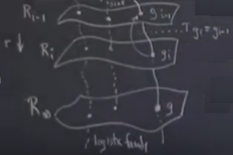
Bu eşleme alt tabakaya gelinceye kadar doğru, her tabaka üstündeki bir tabakaya eşleme yapıyor. Ama $R_\infty$ tabakasında ne oluyor? Diyelim ki başlangıç noktası lojistik harita [soldaki nokta] ve ardı ardına tekrar normalizasyon yapıyorum. Bu işlemler beni bir noktadan diğerine zıplata, zıplata $g$'ye getirecek.
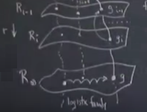
Niye bunu söyledim? Biraz düşünelim, önceki iddiamız neydi? $T$ en son katmanı kendisine eşlemelidir, ve yine hatırlarsak o en son katmandaki $g$ noktasının tekrar normalizasyonun limiti olduğunu söylemiştik. Demiştik ki Feigenbaum $\alpha$'yi doğru hesapladığında $g$'nin, o noktanın tekrar normalizasyonun limiti olduğunu gösterdi,
$$
g(x) = \lim_{n \to \infty}
\alpha^n f^{2^n} \left(\frac{x}{\alpha^{n}}, R_n\right)
$$
Yani kaosun başlangıcında ardı ardına tekrar normalizasyon yapıyoruz, bu bizi birşeylere doğru yakınsamaya sevkediyor. Yani aslında o katman üzerinde bizi $g$'ye iten gidiş yolları var. Ama biraz katmanın üstüne çıkartacak kadar sarsım uygulasak (pertürb) bu bizi direk zincirleme yukarı gönderecek.
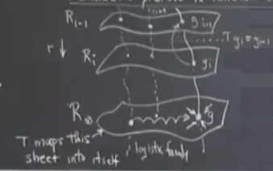
Yani aslında $g$ noktası bir eyer noktası, katmanda ona doğru giden sonsuz tane gidiş yolu var, ve yukarı, ondan kaçan yönde tek bir gidiş var, o yön parametre $R$'nin değişimi bağlamında, kavisli çizgi üzerinde. Bir anlamda $\infty,1$ eyer noktası, zihinde canlandırması zor ama, olanlar bunlar. İşte tüm o değişik haritaların, lojistik, sinüsün, vs. aynı şeye tekrar normalize olmasının sebebi bu.
Soru
$R_\infty$ katmanı haricindeki diğer katmanlarda, herhangi bir $R_i$'de ne oluyor?
Cevap
Bu katmanlar değişmez (invariant) katmanlar değiller. O katmanlardan birindeyseniz, bir döngü sizi bir sonraki katmana taşır.
Şu noktayı vurgulamak istiyorum. Elimizde eşleme $T$ var, o bizi fonksiyon uzayında bir yerden bir diğerine taşıyor, iddia ediyoruz ki $g$'de eyer noktamız var, ve ona doğru sonsuz tane gidiş var. Bu arada fonksiyon uzayı kavramı sizi hakikaten şaşırtıyorsa o kadar çılgın bir fikir olmadığını belirtmek isterim. Mesela Taylor serilerini biliyoruz.. Sinüs için kullanılan Taylor serisini düşünelim. $x-\frac{x^3}{3!}+\frac{x^5}{5!}+...$ vs. diye gidiyor. Şimdi sinüs fonksiyonunu bir nokta olarak düşünürsek bu noktanın $[1,0,-1/3!,0,1/5!,..]$ gibi bir vektöre tekabül ettiğini söyleyebilirdik, vektördeki her öge $x$'in belli bir katını temsil ediyor, $x^1,x^2,x^3,..$ gibi, $x^1$'den 1 tane var, $x^3$'ten -1/3 tane var.. Bu tek yöntem demiyorum ama bir fonksiyonu temsil etmenin bir yöntemi diyorum, fonksiyonu onun McLaurin serisinin katsayıları üzerinden temsil etmek. Bu vektör sonsuz boyutlu bir vektör olur, sonsuz bilgiye ihtiyacı vardır. Bu bağlamda sinüs fonksiyonunu sonsuz boyuttaki bir vektör olarak düşünebiliriz, ve $R_\infty$ uzayı bu tür vektörlerin yaşadığı bir tür uzay olarak görülebilir.
Soru
Bu eyer diğerlerinden daha stabil olarak tarif edilebilir mi çünkü ondan dışarı doğru giden tek bir yön var, diğer gidiş yollarının hepsi ona doğru gidiyor?
Cevap
Evet. Hatta bu tür durumlara ortak-boyutunun (co-dimension) 1 olması deniyor. Kimse "sonsuz tane gelen bir tane çıkan" demez. Ve bu sisteme "neredeyse stabil" denebilir.
Ama şimdi ana noktayı vurgulayayım... $\delta$ nerede? Onu gören var mı? $T$ operatörümüz var, şimdi onu $g$ noktası etrafında lineerize etmek istiyoruz. Bunu yapınca bir lineer harita elde edeceğiz, ve o zaman özdeğerleri olacak. Her lineer operatörün spektrumunu irdelemek gerekir, ve bu özdeğerler içinde $\delta$ $g$'ye tekabül eden gayrı-stabil özdeğer. Da da da [hoca bir kutlama müziği sesi çıkardı]. İşte sonuca eriştik. Tabii bu hesap için fonksiyon uzayında türev almayı bilmemiz gerekiyor, ama diğer derslerde bu öğretiliyor, Frechet türevi denen bir kavram. Neyse, işte $\delta$ bu, $dT$'nin $g$ noktasındaki gayrı-stabil olan özdeğeri.
Tüm bunların anlaşılması zor geliyorsa şimdi size bu değerin basit lise matematiği üzerinden yüzde 10 hata payıyla hesaplanabileceğini göstereceğim.
İstatistiki Fizik dersi alırsanız bu arada, orada işlenen tekrar normalizasyon hesaplarında benzer argümanlar kullanıldığını görürdünüz. Fiziksel olarak ilginç olan durumlar gayrı-stabil olan özdeğerler etrafındadır.
Hesaba gelelim; bu kısım kitabımda işleniyor. Birazdan göreceğimiz işlemden elde edeceğimiz kazanç $\alpha$ ve $\delta$ için basit yaklaşıksal ifadeler elde edecek olmamız. Bir önceki analizimizi süperstabil sabit noktalar ve çevrimler bağlamında yapmıştık. Bu şart değildi. Sayısal bazı avantajlar vardı ama şart değil, kavramsal olarak diğer tip stabilitelere bakabilirdik. O yüzden şimdi süperstabil noktalara bakmak yerine periyot katlanmasının ne zaman olduğuna odaklanalım. Yani $r_1$,$r_2$ dediğimiz çatallaşmalara. Artık sadece lojistik haritadan da bahsetmiyorum, daha genel tanımlar kullanacağım.
$f(x,\mu)$ $x=0$ noktasında ve $\mu=0$ olduğunda periyot katlanma çatallaşması olan herhangi bir harita olsun, pürüzsüz, tek maksimumlu, vs. Kurguyu cebirsel olarak en temiz, basit olacak şekilde ayarlamaya uğraşıyoruz. Yerel olarak bu tür bir haritanın neye benzeyeceği hakkında pek çok şey söyleyebiliriz, yani $x=0$ ve $\mu=0$ yakınında
$$ x_{n+1} = -(1+\mu)x_n + a x_n^2 + O(x_n^3) $$
olur. Hatırlarsak periyot katlanma çatallaşmasında gösterdik ki özdeğer, yani sapmanın çarpanı, $-(1+\mu)$, -1 olacak. Bu periyot katlanmasının bir kriteriydi. Şimdi diyoruz ki $-1$'e yakınız ama ufak bir $\mu$ kadar uzaktayız, periyot katlanması $\mu=0$'da ve $x_n=0$ olunca. Peki bu ek kare, küp terimlerini niye yazdım? $x_n=0$'a yakın bir yere bakıyoruz o sebeple lineer terimi bıraktım, sonra karesel var, küpsel ve daha büyük terimleri aslında sonraki döngülerde bir anlamda yoksayıyorum, hesabımı yaklaşıksal yapan da bu zaten. Eğer tutabildiğim kadar çok derecedeki terimleri tutabilseydim o zaman kesin sonuca daha da yaklaşabilirdim. Ama karesel de oldukca iyi. Ayrıca elle hesap yapabilmek bu durumda mümkün olacak.
Üstteki formülde bir $a$ kullandım fakat aslında ona ihtiyacım yok, yani genelliğe zarar vermeden onu formülden çıkartabilirim, yani $a=1$, yani
$$
x_{n+1} = -(1+\mu)x_n +x_n^2 + ...
\qquad (4)
$$
Yerel haritamız bu.
Ana fikir şimdi geliyor; bu harita tam periyot katlanmasında, ya da $\mu$ yüzünden azıcık sonrasında. Strateji şöyle; incir ağacını düşünelim şimdi, şu anda altta okla gösterilen yerdeyiz,
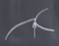
Tam periyot katlanmasının olacağı yerde. Orada olanları analiz etmek istiyorum, ve üstteki formülasyon zaten tam da bunu tarif ediyor, en azından o bölgede olanları tarif ediyor. Ardından bir sonraki periyot katlanması yönünde ilerlemek istiyorum.
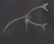
Hatırlarsak tekrar normalizasyonun arkasında yatan fikir kabaca ilk görülen lades kemiği şeklindeki ayrılmanın ondan sonraki [sağda daha ufak görülen] ayrılmalara benzer olması, tabii ölçek farklı ve parametre ileri doğru gitti. Benim şimdi yapmak istediğim ilk ayrışma ve sağ üstteki ikinci
ayrışmada olanları karşılaştırmak. İkinci ayrışmada bakmam gereken döngünün ikinci basamağı çünkü periyot katlanmaya yakın sabit noktalı bir fonksiyonu periyot katlanmaya yakın periyot 2-çevrimi olan bir başka fonksiyon ile karşılaştırmak istiyorum, ikinci döngüye bakarak sabit ikinci fonksiyonun sabit noktasına odaklanabilirim. Yani ikinci ayrışma noktasına gelince ona tekabül eden ve üstteki formüle benzeyen haritayı yazacağım, tabii biraz parametre kaydırması ve $x$ yönünde ölçekleme yapmam lazım, aynen tekrar normalizasyonun bize yapmamızı söylediği gibi. Tek fark bunu şimdi açık bir şekilde yapabileceğimiz.
$\mu > 0$ için 2-periyot noktaları vardır ki bunlar 1. ayrışmadan sonraki iki dalı temsil ediyor, bu dalların geldiği iki 2-periyot noktalarını $p,q$ olarak betimleyelim, ve $p$'nin $q$'ye ve $q$'nun $p$'ye eşlendiği şartını tatmin ediyor olsunlar. Bir önceki formülasyonu kullanırsak,
$$ p = -(1+\mu)q + q^2 \qquad (5) $$
$$ q = -(1+\mu)p + p^2 \qquad (6) $$
Birazdan bir sürü cebir gelecek, o yüzden stratejinin ana hatlarını paylaşayım böylece kaybolmayalım. Yapmak istediğimiz döngüdeki ikinci basamağın (yani $f^2$) bu 2-periyot noktaların birinin, mesela $p$, yakınındaki dinamiklerine bakmak. Şimdi bu parametreyi kaydırırsak parametrenin kendisi periyot katlanması yaşar. Biz de periyot katlanması olan o yerin yakınına gideceğiz, ve haritayı tekrar normalize edeceğiz, ve (4)'e benzer hale getireceğiz. (4) bizim olmasını istediğimiz genel form. Tekrar normalizasyon açık bir şekilde yapacağız.
Oraya ulaşmak için $p$ ve $q$'yu bulmak zorundaydık, ve $p,q$ üstteki iki denkleme uyumlu olmalı. Denklemleri tekrar organize ederek $p,q$ için çözebilirdik, üstteki formüller biraz karmaşık duruyor gerçi ama, eğer lisede matematik takımında iseniz ne yapılması gerektiğini görürsünüz. Bir denklemi diğerinden çıkartabiliriz, mesela (5) eksi (6) ile, ve bir sürü cebirsel işlem ardından bir sonuca erişiriz. Unutmayalım, $p-q$'yu dışarı çekiyoruz / çarpanlarına ayırıyoruz, çünkü $p-q$ sıfır değil, $p,q$ birbirlerinden farklılar, değil mi? 2-periyot dalındayız çünkü. Sıfıra bölmüyoruz bu sebeple, $p-q$ çarpanını çekip çıkartıyoruz, ve
$$ p + q = \mu, \quad pq = -\mu $$
elde ediyoruz. Ve biraz daha uğraşınca
$$ p = \frac{\mu + \sqrt{\mu^2 + 4\mu}}{2}$$
çıkıyor. Ve
$$ q = \frac{\mu - \sqrt{\mu^2 + 4\mu}}{2}$$
Daha önce söylemiştik ki yapmak istediğimiz $p$'nin dalı üzerinde ilerlemek istiyoruz ve tekrar normalizasiyon yapmak. Bunu yapmak için orijini $p$'ye kaydıralım çünkü demiştik ki diğer haritamızın $x=0$ yakınında bir çatallaşması vardı. Burada da $x=0$ yakınında çatallaşma görmek istiyoruz, o zaman orjini $p$'ye kaydırmamız lazım, o zaman $f^2$'nin yerel dinamiklerine bakmamız lazım.
Bunu nasıl yapacağız? Hatırlarsak biraz önceki $f$ suna eşit, $f(x) = -(1+\mu)x+x^2$. Bu secime gore, dedi ki $p$, ki tanim itibariyle $f$ için bir 2-periyot noktası, $f^2$ için bir sabit noktadır. Şimdi o sabit nokta etrafında denklemi açalım, ve (4) haritasına benzer bir hale getirmeye çabalayalım.
$$ p + \eta_{n+1} = f^2(p+\eta_n) $$
Yani eşitliğin sağ tarafında $p$'den biraz sapınca, ve ikinci döngüye gidince, $p$'den biraz sapan başka bir şey elde ediyorum (eşitliğin sol tarafı). Şimdi tüm bunları $\eta$'nin güçleri / dereceleri üzerinden açalım. Elde edeceğimiz,
$$ \eta_{n+1} = (1-4\mu-\mu^2)\eta_n + C \eta_n^2 + ... \qquad (7)$$
Noktalı yerlerde $\eta$'nin yüksek (küpsel ve daha üstü) dereceli terimleri var, onları atladık. $C$ büyük bir sabit, ve suna eşit,
$$ C = 4\mu + \mu^2 + -3\sqrt{\mu^2+4\mu} \qquad (8)$$
$\eta$ denklemi bu değişkenin $p$'ye yakınken nasıl evrildiğini gösteriyor. Umarım farketmişsinizdir, bu denklem efsanevi harita (4)'e çok benziyor. Bir lineer terim var, bu terim $1+\mu$ idi şimdi daha arap saçı haline geldi. Bir $\eta^2$ var o da $x^2$'in karşılığı.
Eğer incir ağacını tekrar düşünürsek ilk dallanma oluyor, sonra dallarda bir daha dallanma oluyor, bu resim aynen üstteki formül için de geçerli olurdu, tek fark tekrar normalizasyon olması. Bu düşünceyi takip ederek diyorum ki $C$'yi tekrar ölçekleme faktörü olarak kullanalım. Çünkü elimizdeki tamı tamına $x$ haritası gibi değil, orada $x_n^2$'nin katsayısı 1, ama biraz önceki denklemde $\eta_n^2$'nin katsayısı $C$. Bu $C$'den kurtulmak istiyoruz, bunu $C$'yi tekrar ölçekleme parametresi olarak kullanarak yapabiliriz, $C$ üzerinden $\eta$ haritasını (4)'e benzetmeye çalışacağız. Tabii bunu yaparken yeni bir $\mu$'ya da ihtiyacımız var. Tekrar normalizasyon için $x$ yönünde her şeyi ufaltmamız lazım, sonra parametreleri ilerletmek için incir ağacında sağa doğru adım atmamız lazım, $\mu$ bizim için bunu yapıyor. Bu yeni $\mu$'nun değişikliğini vurgulamak için ona $\tilde{\mu}$ diyeceğim. Dalgalı şapka yeni, ilerletilmiş anlamında olsun. Tekrar ölçekleme,
$$ \tilde{x_n} = C \tilde{\eta} $$
Şimdi $\eta$ denklemi (7)'ye göz atalım ve bu ölçekleme seçiminin niye iyi bir seçim olduğunu görelim. O denklemi $C$ ile çarparsam ne olur? Solda $C \eta$ sağda $C \eta$, ve $C^2 \eta^2$. O zaman $C \eta$ doğal bir seçim, herşeyin temiz çıkmasını sağlayacak.
Devam edelim, üstteki değişken değişimi sonrasında,
$$ \tilde{x}_{n+1} -(1+\tilde{\mu})\tilde{x}_n + \tilde{x}_n^2 + ... $$
elde ederiz. Şu $1+\tilde{\mu}$ kısmı nedir? Bu terim (7)'deki $\eta$'nin katsayısına tekabül ediyor. Değil mi? Çünkü formülü (7)'e benzetmeye uğraşıyorum, yapmaya çalıştığımız bu, tek değişiklik şapkalı değişkenler. Tam detayıyla vermek gerekirse $-(1+\tilde{\mu}) = 1-4\mu - \mu^2$. Bunu temizlersem,
$$ \tilde{\mu} = \mu^2 + 4\mu - 2$$
Böylece yeni $\mu$ ve eski $\mu$ arasındaki bağlantıyı bulmuş oluyorum. Bu büyüklük bana parametremi incir ağacında ne kadar kaydırmam gerektiğini söylüyor öyle ki bir sonraki tekabül eden periyot katlanmanın olacağı ana yakın bir yere geleyim. $C$ $x$ yönündeki ölçekleme. Daha önce $\alpha$ parametresinin de $x$ yönünde ölçekleme yaptığını görmüştük değil mi? İşte bu $C$'nin mevkidaşı oluyor. Üstteki $\tilde{\mu}$ denklemi bizi incir ağacında sağa doğru, kaosun başlangıcına doğru götüren şey, yani ilk periyot katlamasından ikincisine doğru gidiyorum, ama biz aslında oraya gitmek istemiyoruz, biz tam kaos çıkarken neler olur, onu görmek istiyoruz, yani noktalı çizgide olanlarla.
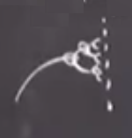
Birazdan ne yapacağımı tahmin edeceksiniz herhalde, üstteki formülü bir özyineli harita olarak gör. Eski $\mu$'m vardı (eşitliğin sağ tarafı), işlem sonucu yeni bir $\mu$ elde ettim (eşitliğin sol tarafı). Ve bunu ardı ardına işletebilirim. Bu beni sürekli ileri gönderecek, ta ki kaosun başlangıcına gelinceye kadar. Tabii tam kaosun çıkacağı noktada da bir lineerizasyon yapmam lazım, ki bu da bana $\delta$'yi verecek. Seyredin şimdi. Üstteki formülün sabit noktası nedir? Yani $\mu>0$ olduğu durumda (incir ağacında hep ileri gidiyoruz) $\tilde{\mu} = \mu$ olduğu yer neresidir? Bu
$$ \mu_\infty = \mu_\infty^2 + 4 \mu_\infty - 2$$
Bunu karesel formülü kullanarak çözersem
$$ \mu_\infty = \frac{1}{2} \left( -3 + \sqrt{17} \right)$$
Bu bir sayı. Bu sayıyı hesaplayalım şimdi, ilginç bir sayı bu, belki tanıdık gelecektir bazılarınıza.
$$ \approx 0.56.. $$
Bu sayının ilginç tarafı nedir? Bu hesaba nasıl başladığımızı düşünelim. Dedik ki "ilk periyot katlanmasına yakın olduğumuzu farz edelim". Bunun nerede olduğunu hatırlıyor muyuz? $r=3$ noktasında.
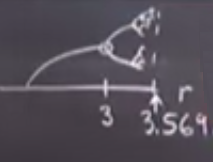
Üstte görülüyor. Şimdi diyoruz ki buradan belli bir mesafede ileri gitmemiz lazım, 0.56 kadar, ki kaos başlangıcına gelebilelim, ve hakikaten de bu doğru bir adım olurdu çünkü bizi 3.569.. noktasına getirirdi, ki bu sayı hakikaten kaosun başlangıcını belirleyen sayı. İşte biz tam da bu sayıyı analitik olarak kestirerek hesaplamış olduk.
Ama daha fazlası da var. Şimdi Üstteki formülü / haritayı $\mu_\infty$ etrafında lineerize edelim. Üstteki harita için $\mu_\infty$'in stabilitesini kontrol edelim. Tekrar normalizasyon $\mu$-döngüsü
$$ \mu_{k+1}=\mu_k^2 + 4\mu_k - 2 = f(\mu_k)$$
Bu arada kitabıma bakarsanız orada farklı bir indişleme yaklaşımı kullandığımı göreceksiniz. Kitapta $\mu_{k+1}$ yerine $\mu_{k-1}$ kullandım mesela, bunun sebebi kitapta o fonksiyon uzayı resmine girmedim, ve eyer noktasında gayrı-stabil bir özdeğer olması kafa karıştırıcı olacaktı. İndişlerle o sebeple oynadım biraz ki bu durum ortaya çıkmasın. Fakat biraz önce kullandığım yöntem olması gereken.
Neyse eğer üstteki özyineli haritam ise o zaman sabit noktadaki özdeğer, ki bu bizim $\delta$ yaklaşık hesabımız olacak, üstteki formülün türevi üzerinden hesaplanabilir. Biraz önce $f(\mu_k)$'yi gösterdik, şimdi istediğim $f'(\mu_\infty)$. Bu türevi hesaplayınca
$$ 2\mu + 4 |{\mu = \mu\infty} $$
$\mu$ değerini yerine sokunca özdeğer $1 + \sqrt{17}$ çıkıyor, ki o da aşağı yukarı 5.12 olur, ve $\delta = 4.669$ olur. Bu gerçek değerden 0.5 civarı uzakta, yani doğru cevabın yüzde 10 yakınında.
Son nokta, peki $C$ ne olacak? $C$ daha önceki $\alpha$'nin karşılığıdır demiştik. $C$ için yukarıda (8)'de kalabalık bir formülümüz var. O formüle biraz önce bulduğum $\mu_\infty$'yi sokarsam, elde ettiğimiz,
$$ C = \frac{1 + \sqrt{17}}{2} - 3 \left[ \frac{1 + \sqrt{17}}{2} \right]^{1/2} \approx -2.24 $$
Daha önce söylemiştik ki gerçek $\alpha$ aşağı yukarı -2.5, ya da -2.5029. Her neyse ama $x$ yönündeki tekrar ölçeklemeyi bu ufak teorinin verdiği ile karşılaştırınca oldukca yakın bir sonuç elde ediyoruz, yine yüzde 10 civarı.
Umarım bu kaba hesap sizi aşırı soyut, anlamsız gibi gözüken şeylerin gerçekten çok anlamlı şeyler olduğu hakkında ikna etmiştir. Bu fonksiyonları hakikaten kendilerine tekrar normalize edebilirsiniz, ve bu tür argümanı takip ederek periyot katlanması hakkında pek çok anlayış geliştirmeniz mümkündür.
Tekrar normalizasyon konusunun sonuna geldik. Bir sonraki derste fraktalları işleyeceğiz.